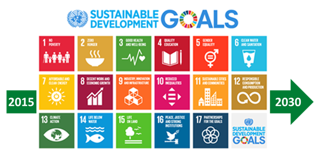
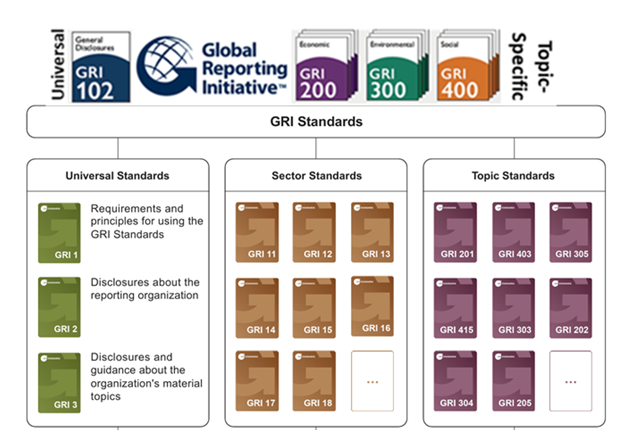
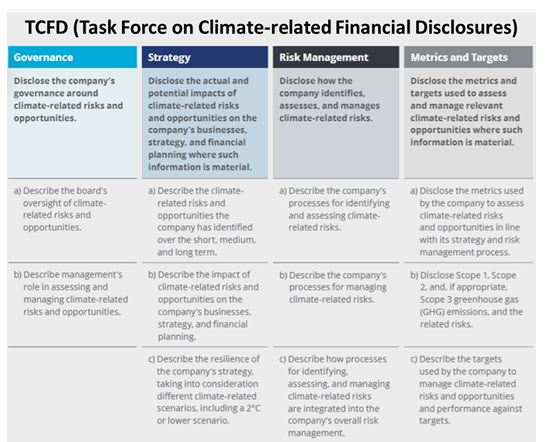
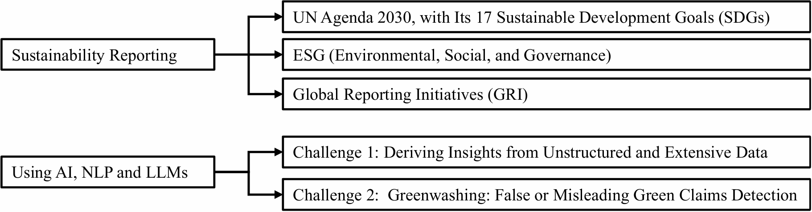
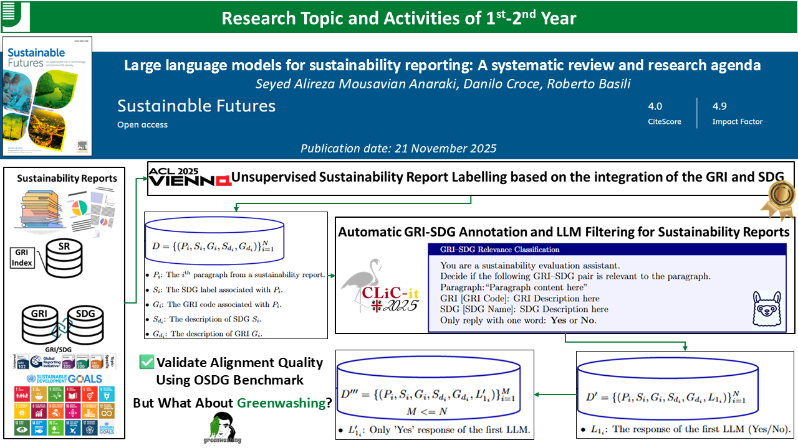
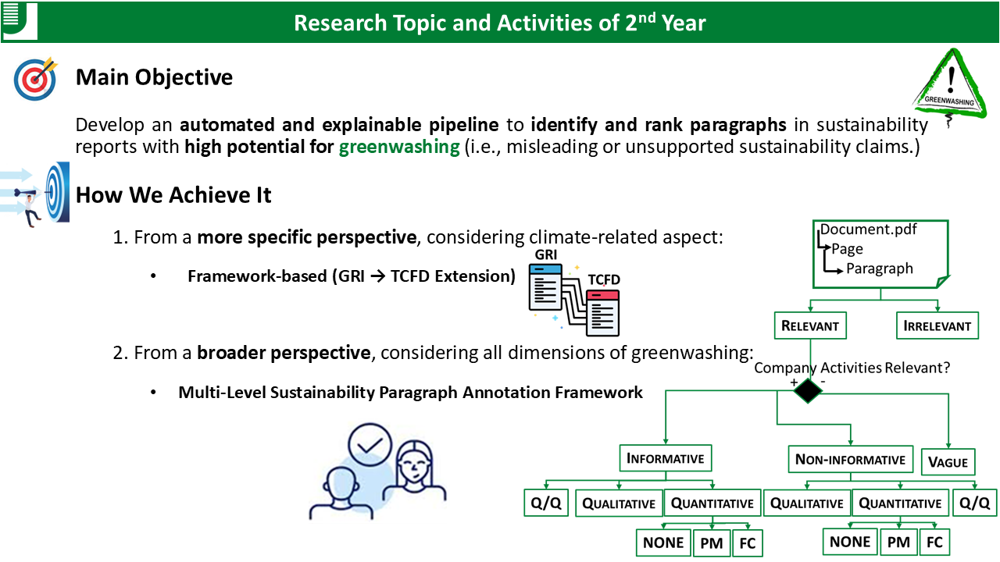
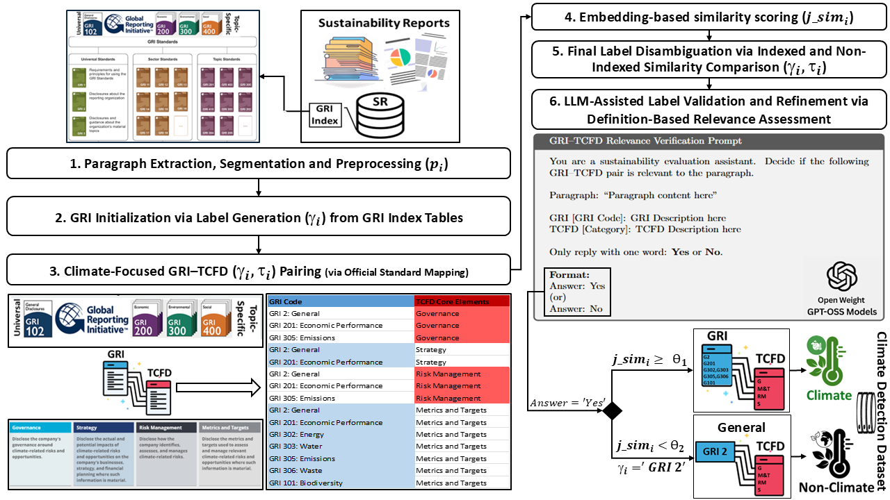
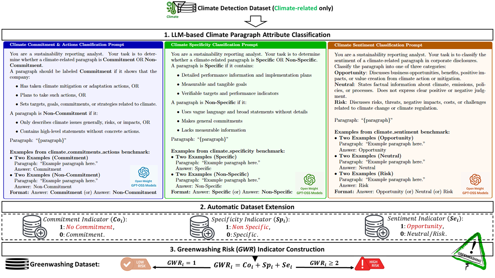

Sustainability Reporting is how companies communicate their Environmental, Social, and Governance (ESG) impacts, risks, and actions to stakeholders.
It is vital because of urgent need for:

SDGs

GRI

TCFD
Over the past two years, this line of research has evolved through a series of connected works:
Anaraki, S. A. M., Croce, D., & Basili, R. (2025). Large language models for sustainability reporting: A systematic review and research agenda. Sustainable Futures, 10, 101494.
This work highlights key challenges in sustainability reporting, including lack of structured annotations, inconsistency across frameworks, and scalability issues. It shows how Artificial Intelligence—especially Natural Language Processing (NLP) and Large Language Models (LLMs)—can play a crucial role in addressing these limitations.

Building on these identified challenges, we addressed the first major limitation through the following works:


From a more specific perspective, considering the climate-related aspects: Framework-based (GRI → TCFD Extension)
Our paper “Unsupervised GRI-TCFD Alignment with LLM-assisted Validation for Climate Disclosure and Greenwashing Risk Analysis” has been accepted for oral presentation at the 2nd Workshop on Ecology, Environment, and Natural Language Processing (NLP4Ecology2026), co-located with LREC2026, in Palma, Mallorca, Spain, on May 12, 2026. This new work focuses on climate-specific disclosure analysis and greenwashing detection.
This work extends the ClimateBERT benchmark for paragraph-level evaluation.

